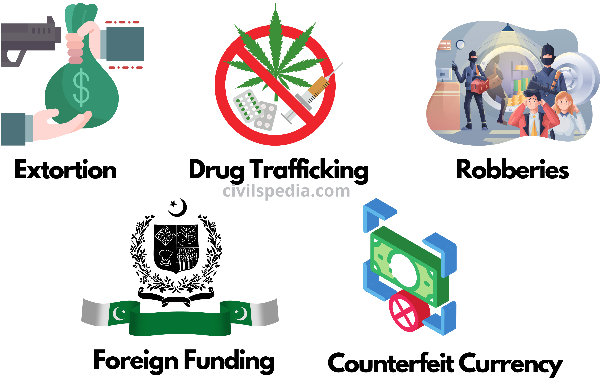

Global Programme against Money Laundering, Proceeds of Crime and the Financing of Terrorism (GPML) also implements UNODC’s capacity-building work on CFT and maintains a repository of resources on the topic. Strengthening Iraqi Institutions to Counter the Financing of Terrorism Since 2015, Iraq has achieved significant progress on its AML/CFT systems. Following the passage of the expanded national AML/CFT legislation, Iraqi authorities re-established their financial intelligence unit (FIU), known as the Anti-Money Laundering/Countering Financing of Terrorism Office. Iraq is a member of the Middle East and North Africa Financial Action Task Force (MENAFATF), and recently became an observer in the Egmont Group of FIUs. Iraq is in the process of conducting its national risk assessment on money laundering and terrorism financing using the World Bank methodology and is pursuing full Egmont Group membership. However, Iraq still faces challenges regarding a low number of reported suspicious transactions from banking and non-banking financial institutions; weak understanding of AML/CFT risks associated with newly arising technology, and the need for strengthening terrorist finance investigations. We have had a long-standing partnership with Iraq since 2014 on responding to emerging terrorism financing threats and increasing the number of AML/CFT prosecutions and convictions in the country. With the aim of enhancing internal coordination and increasing the number of AML/CFT prosecutions and convictions, we have been supporting the newly established independent Iraqi Financial Intelligence Unit through capacity building initiatives, strengthening its cooperation with its regional and international counterparts and supporting its efforts to join EGMONT Group. The project aims to strengthen key Iraqi institutions involved in countering the financing of terrorism (CFT) and support inter-agency cooperation through mentorship and training to representatives from a variety of competent Iraqi authorities, including the central bank of Iraq (CBI) Supervision Department, AML/CFT Office, Ministry of Interior, National Intelligence Service, and Judiciary Council.